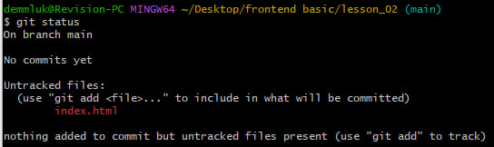
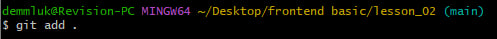
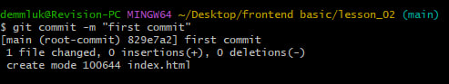
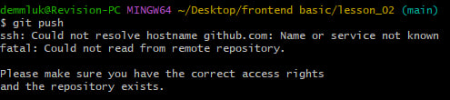

List of commands for terminal:
- git status
- git add .
- git commit -m "exmpl commit"
- git push
Git status
Отображает пути с различиями между файлом индекса и текущим коммитом HEAD, пути с различиями между рабочим деревом и файлом индекса, а также пути в рабочем дереве, которые не отслеживаются Git (и не игнорируются gitignore).
Git add .
Эту команду можно выполнить несколько раз перед фиксацией. Он только добавляет содержимое указанных файлов во время выполнения команды добавления; если вы хотите, чтобы последующие изменения были включены в следующую фиксацию, вы должны снова запустить git add, чтобы добавить новое содержимое в индекс.
Git commit
Git commit — это обычная команда в Git, которая делает снимок текущих изменений проекта. Он создает коммит, который представляет собой моментальный снимок определенного времени в репозитории. Зафиксированные моментальные снимки считаются «безопасными» версиями проекта, и Git никогда не изменит их, если об этом явно не попросят.
Git push
Git push — это команда, используемая для передачи коммитов из локального репозитория в удаленный репозиторий. Отправка обычно используется для обмена изменениями, сделанными в локальном репозитории, с другими членами команды.